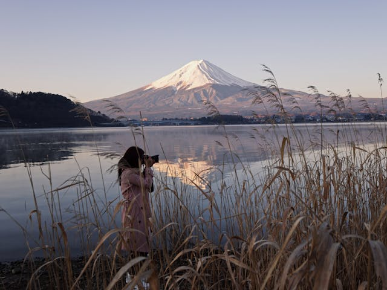
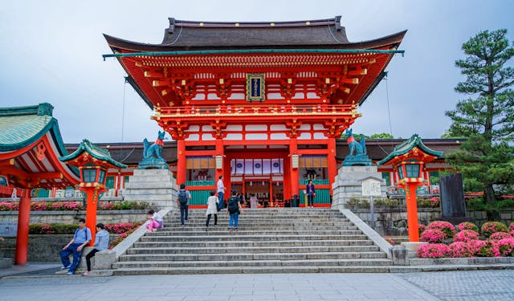

Galeria




Conheça ás incríveis paisagens japonesas, desde o centro movimentado de Tokyo até os templos tradicionais antigos em Kyoto
Bem-vindo à Nippon Tours! Somos apaixonados por compartilhar a essência única do Japão com nossos clientes. Com uma equipe experiente e uma abordagem personalizada, criamos experiências de viagem autênticas que exploram a rica cultura, história e beleza natural do país. Desde os movimentados centros urbanos até os santuários serenos, estamos aqui para guiar você em uma jornada inesquecível pelos destinos mais icônicos do Japão, como Tokyo, Kyoto e além.
Auxiliamos na reserva de passagens aéreas, hotéis, transporte terrestre e outras necessidades de viagem.
Oferecemos tours guiados por profissionais experientes, proporcionando uma experiência educativa e imersiva.
Disponibilizamos suporte e assistência aos clientes durante toda a sua viagem.
Facilitamos a participação dos clientes em experiências culturais autênticas, como cerimônias do chá, aulas de ikebana, workshops de caligrafia e outras atividades tradicionais japonesas.
Organizamos excursões de aventura para explorar as belezas naturais do Japão, como caminhadas em trilhas cênicas, passeios de bicicleta pelo campo ou até mesmo esportes aquáticos em praias paradisíacas.
Organizamos visitas a templos e santuários históricos, oferecendo aos clientes a oportunidade de aprender sobre as tradições religiosas e espirituais do Japão.
Visita ao Castelo Himeji
Visita ao Monte Fuji
Visita a Tokyo Skytree
Passeio por kyoto
Visita ao templo senso-ji
Destinos: Tokyo e Kyoto
Duração: 6 dias
A partir de R$7.500 por pessoa
Destinos: Tokyo e Kyoto
Duração: 7 dias
A partir de R$12.500 por pessoa
Destinos: Tokyo, Kyoto, Hiroshima e Hakone
Duração: 10 dias
A partir de R$45.000 por pessoa
Digite seu email para está recebendo nossa newslatter exclusiva com varias noticiais e novidades interessantes